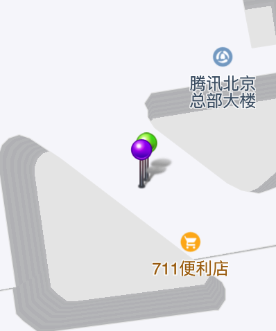
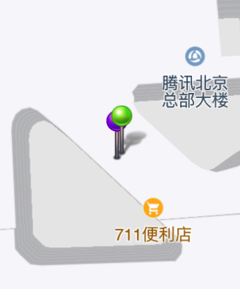
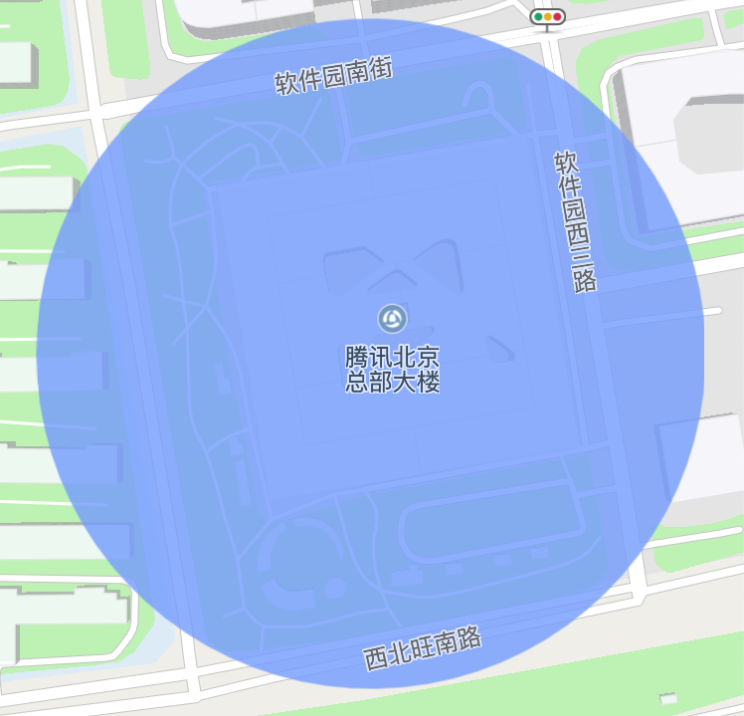
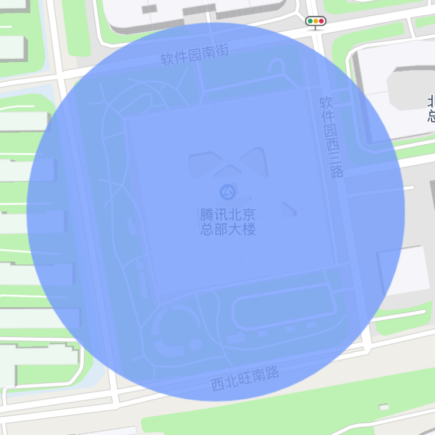

元素压盖顺序
腾讯地图SDK提供displayLevel和zIndex两种属性来控制元素的压盖顺序
QOverlayLevel：地图覆盖物的显示级别，决定了与POI等地理元素的压盖关系，枚举类型如下表所示：
| 类型 | 说明 |
|---|---|
| QOverlayLevelAboveRoads | 在道路之上楼块之下 |
| QOverlayLevelAboveBuildings | 在楼块之上POI之下 |
| QOverlayLevelAboveLabels | 显示在所有POI之上 |
zIndex：覆盖物的显示顺序，决定了它与其它QOverlayView的压盖关系，默认为0。只有同displayLevel的QOverlayView才会比较zIndex。
常见使用方法
两个点标记重叠在一起，无法点击下层的点标记：
zIndex属性默认值为0，设置
greenAnnotation.zIndex = 1;即可将下层的Annotation提到上层。其他覆盖物如QCircle、QPolygon同理。示例图如下： 
覆盖物需要放置在不同的显示级别会有什么样的效果：
QOverlayLevelAboveRoads：覆盖物位于道路之上，楼块之下

QOverlayLevelAboveBuildings：覆盖物位于楼块之上，POI之下

QOverlayLevelAboveLabels：覆盖物现在在所有POI之上

常见问题
为什么QPolylineView绘制的路线，会让POI标志物消失？
线覆盖物与其他图形不同，由于一般线是绘制在道路中的，因此具有POI避让规则，会让线周围的POI自动隐藏。